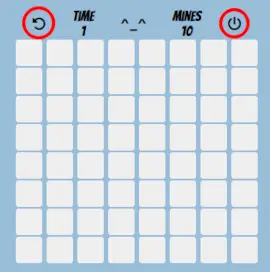
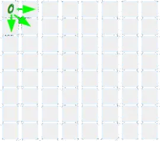
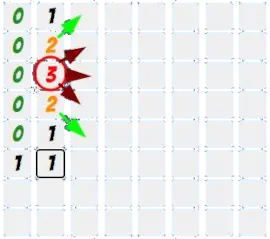
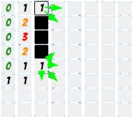
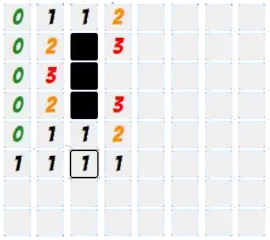

How To Play
MineSweeper is a logic game that also involves some guesswork.
The aim of the game is to uncover the whole playing field without stepping onto a mine.
Differently put, you need to click all squares that do not have a mine.

First, note that once you have started a game, you can click the circle arrow to restart.
After clicking it, the computer creates a new playing field.
No two games of MineSweeper are the same!
As its unavoidable to step on mines, you will have to restart quite often.
Don't be discouraged, this is a natural part of the game.
The off button allows you to navigate back to the start menu.
At the beginning of the game, you have absolutely no information about where mines are
and will need to click a random square to gain some information.
It is a good strategy to click the corner and border squares, as they only have 3 or 5 adjacent squares respectively.
This does not reduce your chance to step on a mine, but often the information you get will lead to more progress.

Once you click a square, you know how many mines there are in the adjacent squares.
So whenever you find one with no adjacent mines i. e. a "zero square", you can uncover all surrounding squares.
Here, we have such a situation.

After finding more zeroes and clicking all their surrounding squares we have reached this position. Look at the "three square" now.
It has three mines in surrounding squares and there are only three squares that have not been uncovered yet next to it.
Ergo the mines must be in these three squares. It is a good idea to mark mine squares by right-clicking or them. If you're on a mobile device, tap and hold for a short while.
Note that the mines counter at the top will go down every time you mark a mine, so you always know how many mines there are left for you to find.
When you look at the "two squares" above and below the "three square", you will see that they border on two mines.
Well, we already know where these mines are as we just marked them.
This means that we can safely click the remaining surrounding squares.

After doing that, we have found two "one squares".
Again, we already know where these mines are and can continue to uncover more squares.

Unfortunately the information we gained from this does not directly tell us what squares we should mark or click next.
At this point, you will need to guess again. This is just the nature of MineSweeper.
Now it's time for you to go mine hunting yourself! Good luck solving these puzzles. Enjoy!
If you don't want the game to adjust the playing field size to your screen, activate the button below
(May be useful on desktop)
Pick a different background color:
Select your custom difficulty settings: